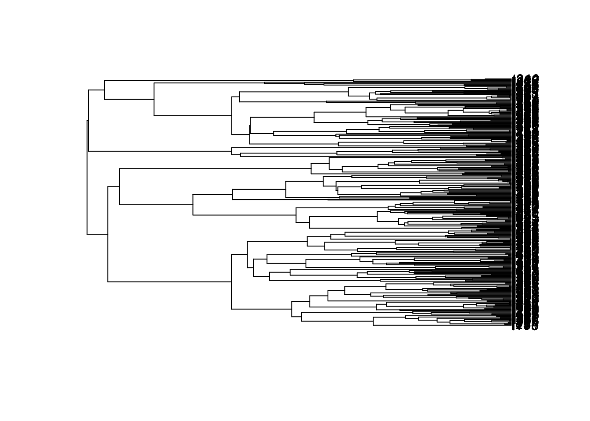
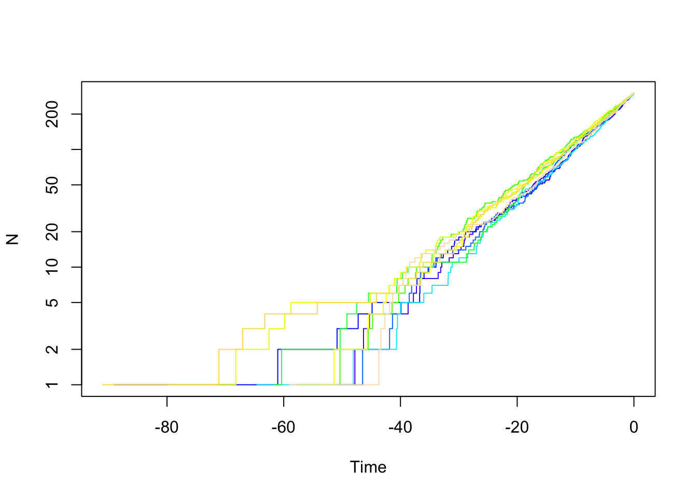
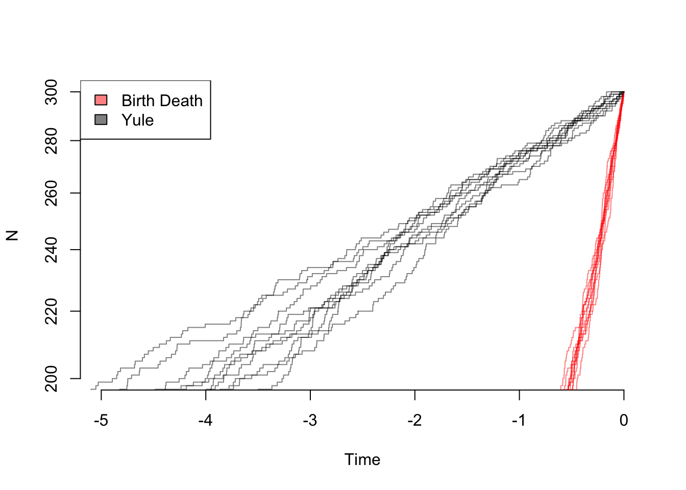
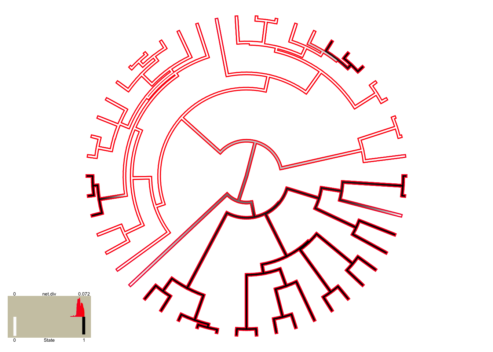

Diversification
Brian O’Meara
3/21/2017
Tree only models
First, install and load ape (Paradis et al., 2004), TreeSim (Stadler, 2011), geiger (Harmon et al., 2008), diversitree (FitzJohn 2012) and hisse (Beaulieu & O’Meara, 2016). For the latter, it’s probably best to load the cutting edge github version.
#install.packages(c("ape", "TreeSim", "geiger", "diversitree", "devtools"))
library(ape)
library(TreeSim)
library(geiger)
library(diversitree)
#devtools::install_github("thej022214/hisse")
library(hisse)Let’s initially look just at diversification alone. Simulate a 30 taxon tree with only speciation, no extinction:
my.tree <- TreeSim::sim.bd.taxa(n=300, numbsim=1, lambda=0.1, mu=0)[[1]]As always, plot it:
plot(my.tree)
One way to look at trees, and actually what many methods reduce to under the hood, is lineage through time plots.
ape::ltt.plot(my.tree)
You should see it increasing exponentially. Let’s put it on a log scale:
ape::ltt.plot(my.tree, log="y")
We can look at multiple trees:
yule.trees <- TreeSim::sim.bd.taxa(n=300, numbsim=10, lambda=0.1, mu=0, complete=FALSE)
ape::mltt.plot(yule.trees, log="y", legend=FALSE)
We can also look at trees with birth and death.
bd.trees <- TreeSim::sim.bd.taxa(n=300, numbsim=10, lambda=1, mu=.9, complete=FALSE)
ape::mltt.plot(bd.trees, log="y", legend=FALSE)
And compare them:
depth.range <- range(unlist(lapply(yule.trees,ape::branching.times)), unlist(lapply(bd.trees,ape::branching.times)))
max.depth <- sum(abs(depth.range)) #ape rescales depths
plot(x=c(0, -1*max.depth), y=c(1, ape::Ntip(yule.trees[[1]])), log="y", type="n", bty="n", xlab="Time", ylab="N")
colors=c(rgb(1,0,0,0.5), rgb(0, 0, 0, 0.5))
list.of.both <- list(bd.trees, yule.trees)
for (i in sequence(2)) {
tree.list <- list.of.both[[i]]
for (j in sequence(length(tree.list))) {
ape::ltt.lines(tree.list[[j]], col=colors[[i]])
}
}
legend("topleft", legend=c("Birth Death", "Yule"), fill=colors)
And zooming in on the final part of the plot:
depth.range <- range(unlist(lapply(yule.trees,ape::branching.times)), unlist(lapply(bd.trees,ape::branching.times)))
max.depth <- sum(abs(depth.range)) #ape rescales depths
plot(x=c(0, -5), y=c(200, ape::Ntip(yule.trees[[1]])), log="y", type="n", bty="n", xlab="Time", ylab="N")
colors=c(rgb(1,0,0,0.5), rgb(0, 0, 0, 0.5))
list.of.both <- list(bd.trees, yule.trees)
for (i in sequence(2)) {
tree.list <- list.of.both[[i]]
for (j in sequence(length(tree.list))) {
ape::ltt.lines(tree.list[[j]], col=colors[[i]])
}
}
legend("topleft", legend=c("Birth Death", "Yule"), fill=colors)
So even though the the net diversification rate is the same, there are very different patterns: in theory, one can estimate both birth and death rates from these trees. In practice, of course, with rates that change over time due to mass extinctions or trait evolution, missing taxa, etc. it can practically be hard to tell these apart.
TODO Try plotting some with other diversification parameters. What happens if speciation rate is much higher than extinction rate? How does the simulation change with different values, but keeping their difference constant? If their sum is constant? [remember to change to eval=TRUE to run]
my.trees <- TreeSim::sim.bd.taxa(n=300, numbsim=10, lambda=stop("CHOOSE YOUR VALUES"), mu=stop("CHOOSE YOUR VALUES"), complete=FALSE)
ape::mltt.plot(my.trees, log="y", legend=FALSE)Once you can see that there is some information in the distribution of branch lengths, you can (and people have) make multiple models and compare them: a model where diversification rate slows or speeds up over time generates different predictions from a model where it’s constant, for example. There are a wide bestiary of models to compare: models that imply logistic growth to a maximum number of species (“Let’s speciate due to the Rockies!” “Wait, we can’t: there are too many species of us in China, we’re full!”), species age (“I haven’t speciated in a while – I forget how”), mass extinctions (“Incoming rock!!!”), and more. It’s important to remember the idea of dull hypothesis testing: if you’re comparing a complex model versus a simple model, on a messy, real dataset, you’re probably going to reject a simple model, even if the complex model isn’t true. It’s also worth looking at parameter estimates: if you find your group is undergoing logistic growth, what is the carrying capacity? If it’s a group of 26 species, and the carrying capacity is 27, that’s very different from finding a carrying capacity of 5000. The effect of missing species can also be significant (simulation to test for this effect can be important). There are also methods, like Medusa (Alfaro et al., 2009) and BAMM ([Rabosky, 2014[(http://journals.plos.org/plosone/article?id=10.1371/journal.pone.0089543)) that attempt to infer where on a tree diversification rate shifts have happened, though I’d currently (March 2017) caution against their use as the basis for a study (but using them to complement results gotten another way could be informative).
Tree plus trait models
An important point to remember about trait-based diversification models is that the tree and characters together are a result of the model. Thus, for example, if one wanted to test a null model for a trait having no effect on diversification, simulating trait evolution on an empirical tree is a bad idea: even though the trait data were evolved under a model with no differential diversification, there’s no guarantee that the empirical tree was (there are certainly traits that could have affected rates, rates can change through time at mass extinctions, etc.). See more discussion of this in Beaulieu & O’Meara, (2016). So to understand diversification, we’re going to have to look at the tree and traits jointly.
This exercise is partially based on the HiSSE vignette by Jeremy Beaulieu.
First, simulate a tree and characters to use:
speciation.rates <- c(0.1, 0.1, 0.1, 0.2) #0A, 1A, 0B, 1B
extinction.rates <- rep(0.03, 4)
transition.rates <- c(0.01,0.01,0, 0.01, 0, 0.01, 0.01,0,0.01, 0,0.01,0.01)
pars <- c(speciation.rates, extinction.rates, transition.rates)
phy <- tree.musse(pars, max.taxa=50, x0=1, include.extinct=FALSE)
sim.dat.true <- data.frame(names(phy$tip.state), phy$tip.state)
sim.dat <- sim.dat.true
# Now to hide the "hidden" state
sim.dat[sim.dat[,2]==3,2] = 1
sim.dat[sim.dat[,2]==4,2] = 2
# and convert states 1,2 to 0,1
sim.dat[,2] = sim.dat[,2] - 1As always, look at what we have wrought:
plot(phy)
knitr::kable(cbind(sim.dat, true.char=sim.dat.true$phy.tip.state))| names.phy.tip.state. | phy.tip.state | true.char | |
|---|---|---|---|
| sp7 | sp7 | 0 | 1 |
| sp9 | sp9 | 0 | 3 |
| sp14 | sp14 | 0 | 1 |
| sp16 | sp16 | 0 | 1 |
| sp17 | sp17 | 1 | 4 |
| sp19 | sp19 | 0 | 1 |
| sp23 | sp23 | 0 | 1 |
| sp25 | sp25 | 0 | 3 |
| sp27 | sp27 | 0 | 1 |
| sp28 | sp28 | 1 | 4 |
| sp30 | sp30 | 1 | 2 |
| sp31 | sp31 | 0 | 1 |
| sp32 | sp32 | 0 | 1 |
| sp33 | sp33 | 1 | 4 |
| sp34 | sp34 | 0 | 1 |
| sp35 | sp35 | 0 | 1 |
| sp38 | sp38 | 1 | 4 |
| sp42 | sp42 | 1 | 2 |
| sp43 | sp43 | 1 | 2 |
| sp44 | sp44 | 1 | 4 |
| sp45 | sp45 | 0 | 1 |
| sp46 | sp46 | 0 | 1 |
| sp47 | sp47 | 1 | 2 |
| sp48 | sp48 | 1 | 2 |
| sp49 | sp49 | 0 | 1 |
| sp50 | sp50 | 0 | 1 |
| sp51 | sp51 | 1 | 2 |
| sp52 | sp52 | 1 | 4 |
| sp53 | sp53 | 0 | 3 |
| sp54 | sp54 | 1 | 4 |
| sp55 | sp55 | 1 | 4 |
| sp56 | sp56 | 1 | 2 |
| sp57 | sp57 | 1 | 2 |
| sp58 | sp58 | 0 | 3 |
| sp59 | sp59 | 0 | 3 |
| sp60 | sp60 | 1 | 2 |
| sp61 | sp61 | 1 | 2 |
| sp62 | sp62 | 0 | 1 |
| sp64 | sp64 | 1 | 2 |
| sp65 | sp65 | 1 | 4 |
| sp66 | sp66 | 0 | 1 |
| sp67 | sp67 | 1 | 4 |
| sp68 | sp68 | 1 | 4 |
| sp69 | sp69 | 1 | 4 |
| sp70 | sp70 | 1 | 4 |
| sp71 | sp71 | 0 | 1 |
| sp72 | sp72 | 1 | 2 |
| sp73 | sp73 | 1 | 2 |
| sp74 | sp74 | 0 | 1 |
| sp75 | sp75 | 0 | 1 |
Rather than optimizing \(\lambda_i\) and \(\mu_i\) separately, hisse optimizes transformations of these variables. Here we let \(\tau_i = \lambda_i+\mu_i\) define “net turnover”, and we let \(\epsilon_i = \mu_i / \lambda_i\) define the “extinction fraction”. This reparameterization alleviates problems associated with over-fitting when \(\lambda_i\) and \(\mu_i\) are highly correlated, but both matter in explaining the diversity pattern (see discussion of this issue in Beaulieu and O’Meara 2016). The number of free parameters in the model for both net turnover and extinction fraction are specified as index vectors provided to the function call. Each vector contains four entries that correspond to rates associated with the observed states (0 or 1) and the hidden states (A or B). They are ordered as follows: 0A, 1A, 0B, 1B. Note that the index vector can also be set up such that parameters are linked among states or even dropped from the model entirely.
Let’s walk through a couple of examples. Take, for instance, the following index vectors:
turnover.anc = c(1,1,0,0)
eps.anc = c(1,1,0,0)In this example, turnover.anc has a single free parameter for both 0A and 1A state combinations; there is a single free parameter for extinction fraction. This is equivalent to a BiSSE model with a fixed turnover and extinction rates across the observed states 0 an 1. Now, say we want to include separate turnover rates for both states 0A and 1A:
turnover.anc = c(1,2,0,0)Thus, a full hisse model would thus be,
turnover.anc = c(1,2,3,4)which corresponds to four separate net turnover rates for 1=0A, 2=1A, 3=0B, 4=1B. Extinction fraction, needless to say, follows the same format, though including a zero for a state we want to include in the model corresponds to no extinction, which is the Yule (pure birth) equivalent:
eps.anc = c(0,0,0,0)Fairly straightforward, but why do we do it this way? This particular format makes it easier to generate a large set of nested models to test. We now include an internal function GetAllModels.anc() that provides all possible combinations of free parameters nested within the full hisse model.
Setting up the transition rate matrix
The transition rate matrix is set up separate from the diversification rate parameters. This was intentional. We want to reinforce the idea that SSE models are not trait evolution models, but rather joint models for the tree and the evolution of a trait. It for this reason that we depict the transition rates in the canonical Q matrix format.
To generate the index matrix describing the free parameters in the transition model, we use the TransMatMaker() function:
trans.rates = TransMatMaker(hidden.states=TRUE)
trans.rates## (0A) (1A) (0B) (1B)
## (0A) NA 4 7 10
## (1A) 1 NA 8 11
## (0B) 2 5 NA 12
## (1B) 3 6 9 NANote that the default matrix contains 12 free parameters, which includes dual transitions between both the observed trait and the hidden trait (e.g., q0A<->q1B). Personally, I’m skeptical about such transitions and always remove them from the model entirely. I accomplish this by using the internal function ParDrop():
trans.rates.nodual = ParDrop(trans.rates, c(3,5,8,10))
trans.rates.nodual## (0A) (1A) (0B) (1B)
## (0A) NA 3 5 0
## (1A) 1 NA 0 7
## (0B) 2 0 NA 8
## (1B) 0 4 6 NAYou may also want to run a model where we assume all transitions are equal to one another. This will often be a sensible approach because it is generally difficult to reasonably estimate the transition rates (see Beaulieu and O’Meara 2016). To set the rates equal we can use another internal function, ParEqual(). This function takes pairs of indexes and sets the two equal based on the index of the first entry. Take our example above and let’s set parameter 1 and 6 to have the same rate:
trans.rates.nodual.equal16 = ParEqual(trans.rates.nodual, c(1,6))
trans.rates.nodual.equal16## (0A) (1A) (0B) (1B)
## (0A) NA 3 5 0
## (1A) 1 NA 0 6
## (0B) 2 0 NA 7
## (1B) 0 4 1 NANote that the index for parameter 6 has become 1 – in other words, their rate will take the same value. Now, let’s set all rates to be equal using this function:
trans.rates.nodual.allequal = ParEqual(trans.rates.nodual, c(1,2,1,3,1,4,1,5,1,6,1,7,1,8))
trans.rates.nodual.allequal## (0A) (1A) (0B) (1B)
## (0A) NA 1 1 0
## (1A) 1 NA 0 1
## (0B) 1 0 NA 1
## (1B) 0 1 1 NAHere we’ve set the index 2 to equal 1, 3 to equal 1, 4 to equal 1, etc. Of course, if this function is confusing, there are other ways to do the same thing. For example, one could do:
trans.rates.nodual.allequal = trans.rates.nodual
trans.rates.nodual.allequal[!is.na(trans.rates.nodual.allequal) & !trans.rates.nodual.allequal == 0] = 1
trans.rates.nodual.allequal## (0A) (1A) (0B) (1B)
## (0A) NA 1 1 0
## (1A) 1 NA 0 1
## (0B) 1 0 NA 1
## (1B) 0 1 1 NAAlso note that in order to run a BiSSE model in HiSSE, the matrix set up would look like this:
trans.rates.bisse = TransMatMaker(hidden.states=FALSE)
trans.rates.bisse## (0) (1)
## (0) NA 2
## (1) 1 NAWhatever transition matrix is designed, it is supplied to the trans.rate= argument in the hisse() call:
pp = hisse(phy, sim.dat, f=c(1,1), hidden.states=TRUE, turnover.anc=turnover.anc,
eps.anc=eps.anc, trans.rate=trans.rates.nodual.allequal)A common mistake
I wanted to highlight a common mistake I’ve seen through my email correspondence with several users. It may be of interest to test a model where the hidden state is associated with only a single observed state, such that the model contains states 0A, 1A, and 1B. The diversification parameters might look something like this:
turnover.anc = c(1,2,0,3)
eps.anc = c(1,2,0,3)The 0 in the 3rd entry for state 0B designates that the parameter is removed entirely from the model. A common mistake is that the transitions to and from 0B are not removed from the transition matrix. This needs to be done manually:
trans.rates <- TransMatMaker(hidden.states=TRUE)
trans.rates.nodual.no0B <- ParDrop(trans.rates, c(2,3,5,7,8,9,10,12))
trans.rates.nodual.no0B## (0A) (1A) (0B) (1B)
## (0A) NA 2 0 0
## (1A) 1 NA 0 4
## (0B) 0 0 NA 0
## (1B) 0 3 0 NAChanging the output
By default, hisse outputs turnover and extinction fraction. I recognize, of course, that this defies the convention of seeking to estimate and interpretation differences in net diversification (\(r_i = \lambda_i-\mu_i\)). Therefore, users can alter how the final parameters are printed to the screen using the output.type= argument in the call hisse(). We’ve included three options: “turnover”, “net.div”, and “raw”, which outputs the results as estimates of speciation (\(\lambda_i\)) and exinction (\(\mu_i\)). Thus, to output net diversification:
pp = hisse(phy, sim.dat, f=c(1,1), hidden.states=TRUE, turnover.anc=turnover.anc,
eps.anc=eps.anc, trans.rate=trans.rates.nodual.allequal, output.type="net.div")Setting up the 2-state character-independent (CID-2) model
Recently Rabosky and Goldberg (2015) raised a very important concern with SSE models. They showed, rather convincingly, that if the tree evolved under a heterogeneous branching process that is completely independent from the evolution of the focal character, SSE models will almost always return high support for a model of trait-dependent diversification. From an interpretational stand point, this is troubling. But, it is important to bear in mind what such a result is really saying: Yes, BiSSE is very wrong in assigning rate differences to a neutral trait, but a simple equal rates diversification model is not correct either. This leaves practitioners in quite the bind, because the “right” model isn’t something that can be tested in BiSSE.
This touches on a much larger issue, which is that we’ve relied on rather trivial “null”" models (i.e., equal rates diversification) to compare against models of trait dependent diversification. Again, it is important to stress that SSE models are not models of trait evolution, but rather joint models for the tree and the trait where they are maximizing the probability of the observed states at the tips and the observed tree, given the model. So, if a tree violates a single regime birth-death model due to any number of causes, then even if the tip data are perfectly consistent with a simple model, the tip data plus the tree are not. In such cases, then, it should not be surprising that a more complex model will tend to be chosen over a nested simpler model, particularly if the underlying tree is large enough. A fairer comparison would need to involve some sort of “null” model that contains the same degree of complexity in terms of numbers of parameters for diversification, but is also independent of the evolution of the focal character, to allow for comparisons among any complex, trait-dependent models of interest.
In Beaulieu and O’Meara (2016), we proposed two such models. These character-independent (CID) models explicitly assume that the evolution of a binary character is independent of the diversification process without forcing the diversification process to be constant across the entire tree. The first model, which we refer to as “CID-2”, contains four diversification process parameters that account for trait-dependent diversification solely on the two states of an unobserved, hidden trait. In this way, CID-2 contains the same amount of complexity in terms of diversification as a BiSSE model. The second model, which we refer to as “CID-4” contains the same number of diversification parameters as in the general HiSSE model that are linked across four hidden states. In the case of the CID=4 model, we have implemented a separate function, hisse.null4() that should be fairly self-explanatory. However, rather than implementing a separate function for the “CID-2” model, we found it is easier to just set it up and test it using the hisse() function. This section describes how to do this.
Remember, the goal is to set up a model where the diversification process is independent from the observed states (0 or 1) of the focal trait. In other words, diversification rate differences, if they exist, will only be associated with one of the hidden states (A or B) regardless of the state of the focal trait. Thus, the free parameters for diversification would look like this:
turnover.anc = c(1,1,2,2)
eps.anc = c(1,1,2,2)In other words, we are specifying that both 0A and 1A have one set of diversification rates, and 0B and 1B have another. That’s it. This is the “null-two” model.
In regards to the transition rates, there are three ways in which they can be set up. The first is to assume the usual 8 transitions in the full hisse model (or 12 if dual transitions are allowed – for this tutorial we remove dual transitions):
trans.rates = TransMatMaker(hidden.states=TRUE)
trans.rates.nodual = ParDrop(trans.rates, c(3,5,8,10))We could also assume all rates are equal:
trans.rates.nodual.allequal = ParEqual(trans.rates.nodual, c(1,2,1,3,1,4,1,5,1,6,1,7,1,8))
trans.rates.nodual.allequal## (0A) (1A) (0B) (1B)
## (0A) NA 1 1 0
## (1A) 1 NA 0 1
## (0B) 1 0 NA 1
## (1B) 0 1 1 NAI will provide a third option which specifies three rates: one rate describing transitions among the different hidden states (A<->B, which could be intrepreted as the rate by which shifts in diversification occur), and two rates for transitions between the observed character states (0->1 or 1->0). Unfortunately, this requires a little bit of clunky coding:
# Now we want three specific rates:
trans.rates.nodual.threerates <- trans.rates.nodual
# Set all transitions from 0->1 to be governed by a single rate:
to.change <- cbind(c(1,3), c(2,4))
trans.rates.nodual.threerates[to.change] = 1
# Now set all transitions from 1->0 to be governed by a single rate:
to.change <- cbind(c(2,4), c(1,3))
trans.rates.nodual.threerates[to.change] = 2
# Finally, set all transitions between the hidden state to be a single rate (essentially giving
# you an estimate of the rate by which shifts in diversification occur:
to.change <- cbind(c(1,3,2,4), c(3,1,4,2))
trans.rates.nodual.threerates[to.change] = 3
trans.rates.nodual.threerates## (0A) (1A) (0B) (1B)
## (0A) NA 1 3 0
## (1A) 2 NA 0 3
## (0B) 3 0 NA 1
## (1B) 0 3 2 NAAs before, turnover.anc, eps.anc, and the transition rate matrix are supplied as arguments to hisse():
pp = hisse(phy, sim.dat, f=c(1,1), hidden.states=TRUE, turnover.anc=turnover.anc,
eps.anc=eps.anc, trans.rate=trans.rates.nodual.allequal)and the results can be compared against any model in the hisse set, including BiSSE.
##Plotting hisse reconstructions
Our HiSSE package provides plotting functionality in plot.hisse.states() for character state reconstructions of class hisse.states output by our MarginRecon() function. Specifically, the function provides an overlay of the state reconstructions on the rate estimates. There are a couple of options for how these reconstructions to be plotted. First, a single hisse.states object can be supplied and it will provide a heat map of the diversification rate parameter of choice. Users can choose among turnover, net diversification (“net.div”), speciation, extinction, or extinction fraction (“extinction.fraction”). I’ve provided example hisse.states output from the example data set simulated above. This particular model assumed two diversification rate parameters – i.e., turnover.anc=c(1,1,1,2), and eps.anc=c(1,1,1,1). Let’s load this file and check that everything has loaded correctly and is of the proper hisse.states class:
load("testrecon1.Rsave")
class(pp.recon)## [1] "hisse.states"pp.recon##
## Phylogenetic tree with 50 tips and 49 internal nodes.
##
## Tip labels:
## sp15, sp57, sp58, sp49, sp50, sp42, ...
## Node labels:
## 1, 3, 1, 1, 1, 1, ...
##
## Rooted; includes branch lengths.Now that we have the right files and information, let’s plot net diversification rates:
plot.hisse.states(pp.recon, rate.param="net.div", show.tip.label=FALSE)
## $rate.tree
## Object of class "contMap" containing:
##
## (1) A phylogenetic tree with 50 tips and 49 internal nodes.
##
## (2) A mapped continuous trait on the range (0.066161, 0.069176).
##
##
## $state.tree
## Object of class "contMap" containing:
##
## (1) A phylogenetic tree with 50 tips and 49 internal nodes.
##
## (2) A mapped continuous trait on the range (0, 1.001).These are the default colors: red to blue for rate and white to black for state. However, other colors can be specified (see plot.hisse.states manual). The legend in the bottom left corner provides the frequency of the observed states (0 or 1) and the distribution of net diversification rates at the tips only. Note that in this particular model I only specified two diversification rate parameters [i.e., turnover.anc=c(1,1,1,2), and eps.anc=c(1,1,1,1)], and yet there seems to be a continuous range of rates at the tips. What gives? Well, when a single reconstruction is provided the rates painted on each branch are the weighted average of the rate, with the marginal probability used as the weights. So this particular painting has taken into account the uncertainty in rates on each branch.
But, please be careful here! Notice that there are parts of the tree that have much higher rates (denoted by bright red) than others (denoted by darker blue). This is actually highly misleading. If you look at the legend the rates span from 0.066 - 0.069! So, really, there aren’t any meaningful differences in the diversification rates despite what the painting may say. By default the visualization uses the minimum rate on the tree for the minimum color, and the maximum rate for the maximum color. However, users may want to use the same color scale across models, even if some of them have a smaller range than others. A vector with the minimum and maximum rate across all models can be passed to the visualization:
plot.hisse.states(pp.recon, rate.param="net.div", show.tip.label=FALSE, rate.range=c(0,0.072))
## $rate.tree
## Object of class "contMap" containing:
##
## (1) A phylogenetic tree with 50 tips and 49 internal nodes.
##
## (2) A mapped continuous trait on the range (0, 0.072072).
##
##
## $state.tree
## Object of class "contMap" containing:
##
## (1) A phylogenetic tree with 50 tips and 49 internal nodes.
##
## (2) A mapped continuous trait on the range (0, 1.001).Now the differences completely disappear.
A really cool feature of the plotting function is that if you provide a list of hisse.states objects the function will “model-average” the results. In other words, branches are painted such that they take into account both state and rate uncertainty and uncertainty in the model. The plot.hisse.states() first calculates a weighted average of the likeliest state and rate combination for every node and tip for each model in the set, using the marginal probability as the weights, which are then averaged across all models using the Akaike weights (i.e., the relative probability of a model).
A first initial step when doing the modeling-averaging approach is to make sure that the hisse.states objects contain the AIC from the model fit embedded in it. The plotting function will not work without it:
pp.recon$aic## [1] 364.8615If this returns a NULL, then something has gone wrong and you should check how you performed the reconstructions. The AIC for the model can be supplied as an argument in the MarginRecon() function (using the pp object we defined above):
pp.recon = MarginRecon(phy, sim.dat, f=c(1,1), hidden.states=TRUE, pars=pp$solution,
aic=pp$aic, n.cores=2)I’ve created two additional hisse.states objects that I will use to demonstrate how to plot model-averaged states and rates: one reconstruction is based on the null-two model [turnover.anc=c(1,1,2,2)], and the other assumes four free turnover rates [i.e., turnover.anc=c(1,2,3,4)]; in all cases I assumed equal transition rates and equal extinction fractions. I recognize that there are many ways to generate a list. But here is one way, where I’m assuming that the marginal reconstructions from three models are saved to the directory we are working from:
hisse.results.list = list()
load("testrecon1.Rsave")
hisse.results.list[[1]] = pp.recon
load("testrecon2.Rsave")
hisse.results.list[[2]] = pp.recon
load("testrecon3.Rsave")
hisse.results.list[[3]] = pp.recon
# Now supply the list the plotting function
plot.hisse.states(hisse.results.list, rate.param="net.div", show.tip.label=FALSE, rate.range=c(0,0.072))
## $rate.tree
## Object of class "contMap" containing:
##
## (1) A phylogenetic tree with 50 tips and 49 internal nodes.
##
## (2) A mapped continuous trait on the range (0, 0.072072).
##
##
## $state.tree
## Object of class "contMap" containing:
##
## (1) A phylogenetic tree with 50 tips and 49 internal nodes.
##
## (2) A mapped continuous trait on the range (0, 1.001).Although this is similar to the plot above, which shows no real rate differences, it actually accounts for both the uncertainty in the model as well as the reconstructions. Note that there are many features that can be adjusted in plot.hisse.states(), which is described in detail in the manual.
Note that the above code is obviously a pretty lame way of generating a list. An even easier way would be to do something like this:
# First, suck in all the files with .Rsave line ending in your working directory:
files = system("ls -1 | grep .Rsave", intern=TRUE)
# Create an empty list object
hisse.results.list = list()
# Now loop through all files, adding the embedded pp.recon object in each
for(i in sequence(length(files))){
load(files[i])
hisse.results.list[[i]] = pp.recon
rm(pp.recon)
}